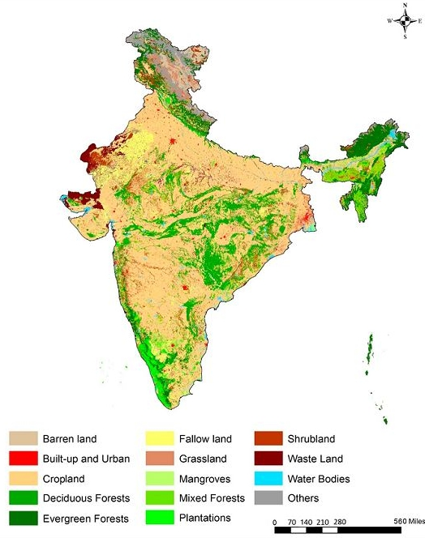

An Incremental Approach for Creating Global Land Cover Maps
Problem statement
TomTom has recently created a global Land Cover (LC) map at mid-low scale by applying machine learning technologies on satellite imagery from the Sentinel 2 mission [link]. As an example, a Land Cover map of India from 2005 is shown below. To create the first version of the map, TomTom conducted a large-scale training data collection operation. The next step is to perform a fully automated and repeatable global LC mapping for small scale, in a cost-effective way. However, the map creation process for the future versions differs from their first iteration, due to the following two reasons:
- the year-on-year Land Cover changes are relatively small in scope compared to the global scale of the map (e.g. wildfires, melting glaciers, etc) and scattered across the globe
- they now have two new assets (the training data as well as the predictions themselves) which they didn’t have back then.

Goal
The main goal of this thesis is to develop efficient algorithms that can: 1) identify the areas where the Land Cover class has potentially changed, 2) generate new predictions for the impacted areas by re-using/re-purposing the existing training data as well as the predictions. To that end, the student will have to investigate semi-supervised learning techniques to classify new land cover data as well as efficient techniques to identify changes in large image datasets.
This thesis is being conducted by Thomas Xanthakis (Thomas.Xanthakis@UGent.be).